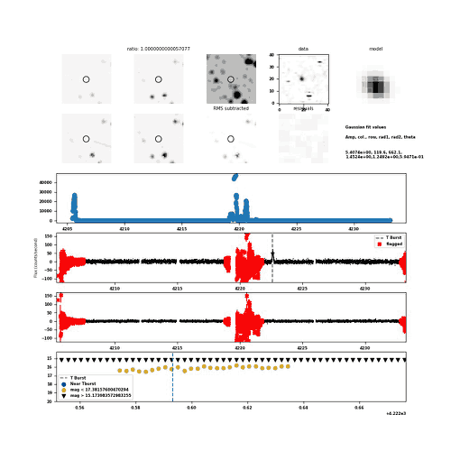

The image and light-curve panels are unchanged from the image-subtraction candidate plot. Red crosses mark cadences rejected by the existing running-RMS checks, the dashed line marks the trigger time, and the magnitude panel highlights the existing near-trigger and sensitivity selections.

Candidate
lc_GRB260701A_cand51536
Event
GRB260701A
Detector
Sector 105 Cam 1 CCD 4
Status
PASS
Detection class
multiple
Detection count
27
RMS
54.4749
Unflagged negative flux points
4881
Trigger time
2026-07-01 02:14:24.147
RA (deg)
298.095
Dec (deg)
-41.2306
Column
120.71
Row
661.586
Galactic longitude (deg)
358.553
Galactic latitude (deg)
-28.4521
Data file
./cam1_ccd4//lcGRB/lc_GRB260701A_cand51536
Panels
The image and light-curve panels are unchanged from the image-subtraction candidate plot. Red crosses mark cadences rejected by the existing running-RMS checks, the dashed line marks the trigger time, and the magnitude panel highlights the existing near-trigger and sensitivity selections.